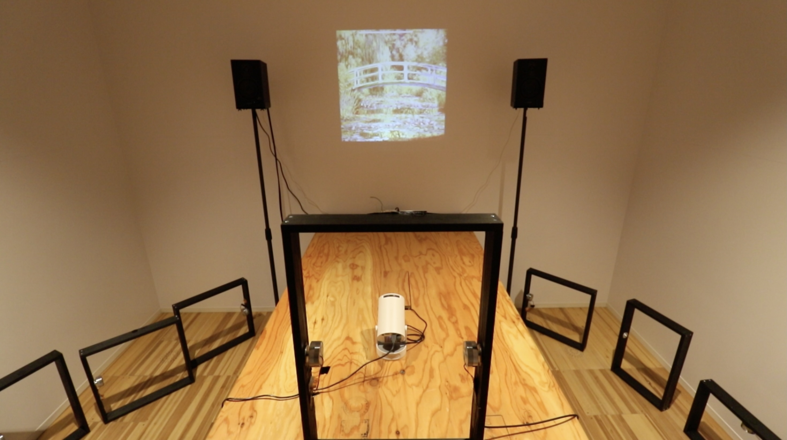
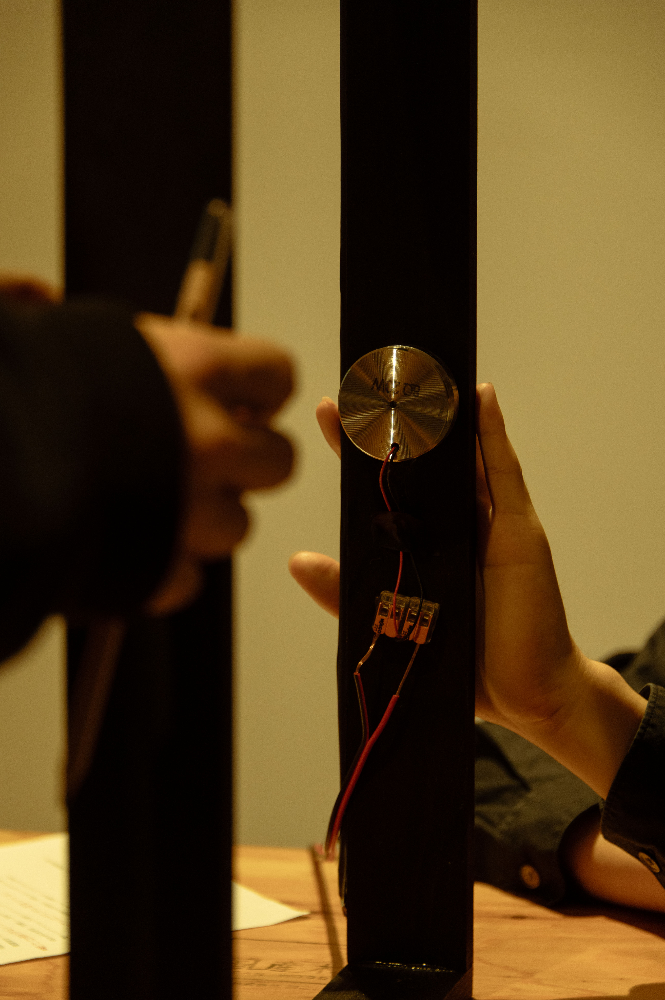
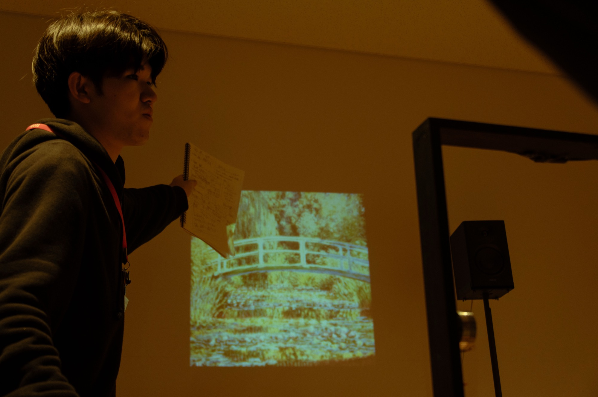
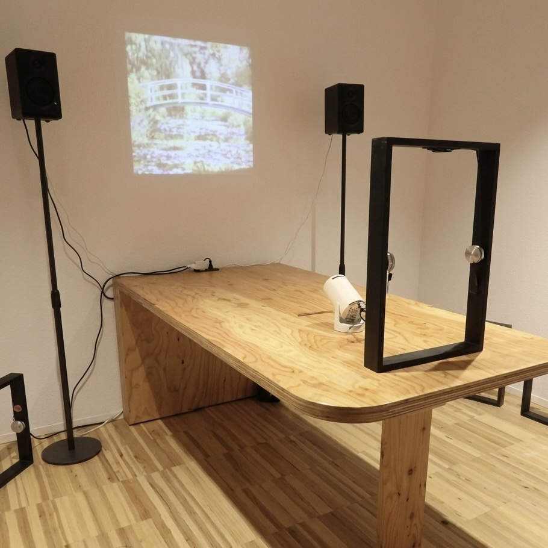
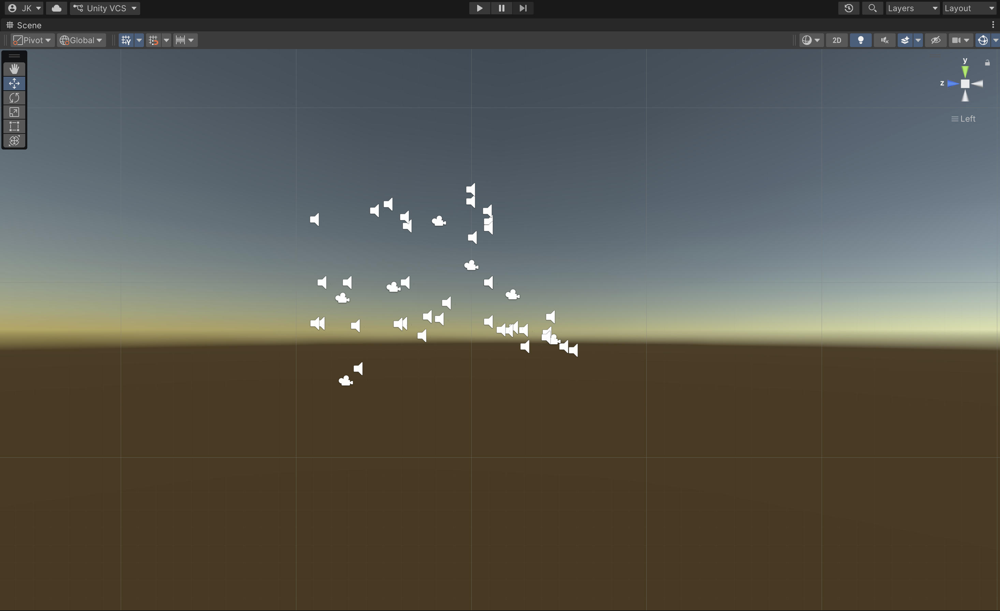
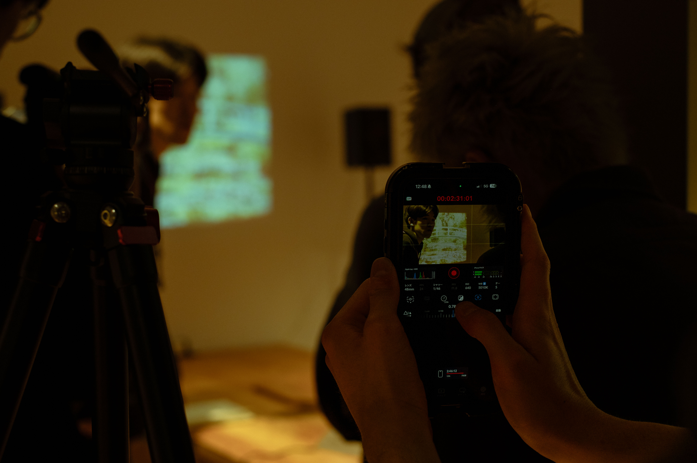
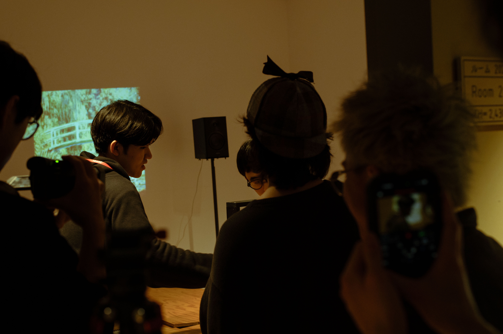
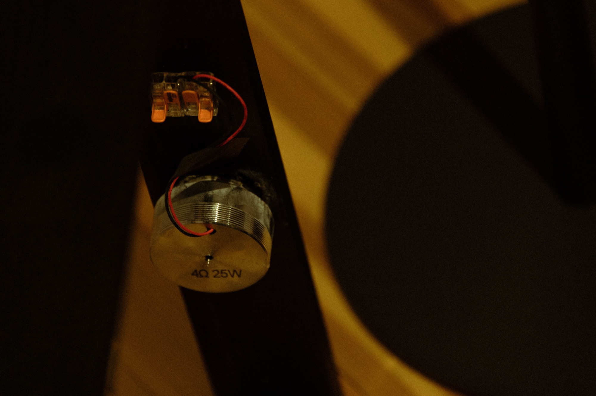
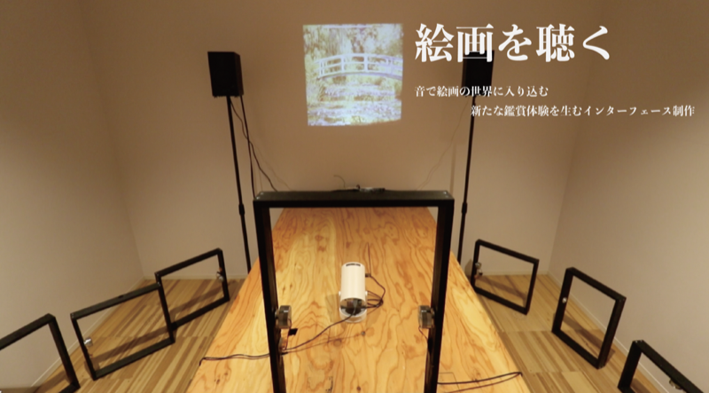

絵画を聴く
01
作品要旨
Concept絵画を音で拡張し、誰もが作品の空間に入り込み・実感できる環境をつくるサウンドインスタレーション。 印象派絵画の色彩・筆致・構図を音響的な要素に変換し、鑑賞者が絵の前に立つことで音が生まれ、 絵画を「聴く」という新しい鑑賞体験を提示する。
01
絵画の視覚情報（色彩・明度・構図）を解析し、音のパラメータへとマッピングする仕組みを構築。
02
鑑賞者の位置や視線に応じて音が変化する、インタラクティブな体験設計。
02
写真
Photos








